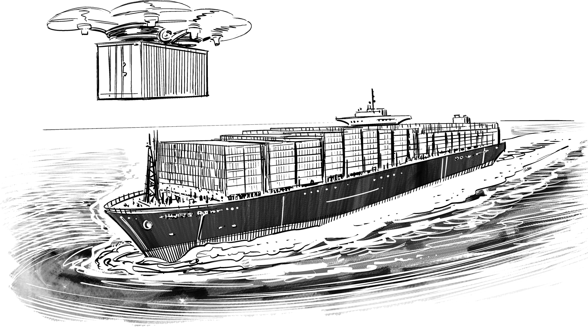

Death by Efficiency Is Slow and Painful

Large companies looking to speed up are used to optimizing the way they work: they can make production a few percent more efficient, negotiate a slightly higher discount from vendors, and reduce budget by printing in black and white. Sadly, though, their digital competitors don’t move 10% faster, but 10 times faster, leaving traditional IT departments somewhat puzzled by how this is even possible.
A quick example showing how a 10-times speed-up can still be a quite conservative figure comes from setting up a version control system. A large IT organization looking to define a standard for source control invested six months of community work to conclude that the company should be using Git (Chapter 25). However, it was considered too difficult to migrate other projects off Subversion, so both products were recommended. The preparation cycle for the global architecture steering board meeting took another month, bringing the total elapsed time to seven months or roughly 210 days.
Some tasks that would take traditional organizations months of preparation and approvals, digital companies can accomplish in a few minutes.
A modern IT organization or startup would have spent a few minutes deciding on the product and have accounts set up, a private repository created, and the first commit made in about 10 minutes. The speed-up factor between the two examples comes to 210 days * (24 hours/day) * (60 minutes/hour) / 10 minutes ≈ 30,000!
If that number alone doesn’t scare you, keep in mind that one organization published a paper (without selecting or implementing a product such as BitBucket, GitHub, or GitLab) and is merrily dragging along its legacy. Its “decision” is thus about as meaningful as prescribing that men should wear black shoes, but brown is also allowed for historical reasons. Meanwhile, the other organization is already committing code in a live repository.
Admittedly, large organizations have more parties to align across, existing source repositories, and many other factors that will make it difficult to set up a shared service in 10 minutes. However, if you augment the timeline to include vendor selection, license negotiation, internal alignment, paperwork, and setting up the running service, the ratio could well end up in the hundreds of thousands. Should these organizations be scared? Yes!
How can modern organizations act at orders of magnitude faster than traditional ones? Traditional organizations pursue economies of scale, meaning they are looking to benefit from their size. Size can indeed be an advantage, as can be seen in cities: density and scale provide short transportation and communication paths, diverse labor supply, better education, and more cultural offerings. Cities grow because the socioeconomic factors scale in a superlinear fashion (a city of double the size offers more than double the socioeconomic benefits), while increases in infrastructure costs are sublinear (you don’t need twice as many roads for a city twice the size). But density and size also bring pollution, risk of epidemics, and congestion problems, which ultimately limit the size of cities. Still, cities grow larger and live longer than corporate organizations. One reason lies in the fact that organizations suffer more severely from the overhead introduced by processes and control structures that are required or perceived to be required to keep a large organization in check. Geoffrey West, past president of the Santa Fe Institute, summarized this dynamic in his fascinating video conversation “Why Cities Keep Growing, Corporations and People Always Die, and Life Gets Faster.”1
In corporations, economies of scale are generally driven by the desire for efficiency: resources such as machines and people must be used as efficiently as possible, avoiding downtimes due to idling and retooling. This efficiency is often pursued by using large batch sizes: making 10,000 of the same widget in one production run costs less than making 10 different batches of 1,000 each. The bigger you are, the larger batches you can make, and the more efficient you become. This view is overly simplistic, though, as it ignores the cost of storing intermediate products, for example. Worse yet, it doesn’t consider revenue lost by not being able to serve an urgent customer order because you are in the midst of a large production run: such an organization values resource efficiency over customer efficiency.
The manufacturing business realized this about half a century ago, resulting in most things being manufactured in small batches or in one continuous batch of highly customized products. Think about today’s cars: the number of options you can order is mind boggling, causing the traditional “batch” thinking to completely fall apart. Cars are essentially batches of one. With all the thinking about “Lean” and “Just-in-Time” manufacturing, it’s especially astonishing that the IT industry is often still chasing efficiency instead of speed.
A software vendor once stated that, “Obviously the license cost per unit goes down if you buy more licenses.” To me, this isn’t obvious at all as there’s no distribution cost per unit of software, aside from that very salesperson sitting across the table from me. Whether 10,000 customers download one license or one customer buys 10,000 licenses should be the same, as long as the software vendor doesn’t send humans to do a machine’s job (Chapter 13). Cloud computing finally broke the old model.
It looks like enterprise software sales and enterprise procurement both have some transformations ahead of themselves. In their defense, though, you have to admit that their behavior is determined by enterprise customers still stuck in the old thought pattern: supersize it to get a better deal!
In the digital world, the limiting factor for an organization’s size becomes its ability to change. While in static environments being big is an advantage thanks to economies of scale, in times of rapid change economies of speed win out and allow startups and digital-native companies to disrupt much larger companies. Or as Jack Welch famously stated: “If the rate of change on the outside exceeds the rate of change on the inside, the end is near.”
The quest for efficiency focuses on the individual production steps, looking to optimize their utilization. What’s completely missing is the awareness of the production flow, i.e., the flow of a piece of work through a series of production steps. Translated into organizations, individual task optimization results in every department requiring lengthy forms to be filled out before work can begin: I have been told that some organizations require that firewall changes be requested 10 days in advance. And all too often the customer is subsequently told that some thing or another is missing from the request form and is sent back to the beginning of the line. After all, helping the customer fill out the form would be less efficient. If that reminds you of government agencies, you might get the hint that such processes aren’t designed for maximum speed and agility.
Besides the inevitable frustration with such setups, they trade off flow efficiency for processing efficiency: the work stations are nicely efficient, but the customers (or products or widgets) chase from station to station, fill out a form, pick a number, and wait. And wait (Chapter 39). And wait some more just to find out they are in the wrong line or their need cannot be processed. This is dead time that isn’t measured anywhere except in the customers’ blood pressure. Come to think of it, in most of these places, the people going through the flow are not customers in the true sense given that they don’t choose to visit this process, but are forced to. That’s why you are bound to experience such setups at government offices, where you could at least argue that misguided efficiency is driven by the pursuit to preserve taxpayer money. You’ll also commonly find it in IT departments that exert strong governance (Chapter 32).
For innovation and product development processes, this type of efficiency is pure poison. While digital companies do care about resource utilization (at Google, datacenter utilization was a CEO-level topic), their real driver is speed: time-to-market.
Traditional organizations often misunderstand or underestimate the value of speed. In a joint business-IT workshop, a business owner once described his product as carrying substantial revenue opportunities. At the same time, the product owner asked for a specific feature that required significant development effort, but which would realize value only when rolled out in another country. Deferring that feature would speed up the initial launch, thus harvesting the portrayed revenue opportunities sooner.
Flow-based thinking calls this concept the cost of delay (see the excellent book The Principles of Product Development Flow2), which must be added to the cost of development. Launching a promising product later means that you lose the opportunity to gain revenue during the time of delay. For products with large revenue upside, the cost of delay can be higher than the cost of development, but it’s often ignored. On top of avoiding the cost of delay, deferring a feature and launching sooner also allows you to learn from the initial launch and adjust your requirements accordingly. The initial launch may be an utter failure, causing the product to never be launched in the second country. By deferring this feature you avoided wasting time building something that would have never been used. Gathering more information allows you to make a better decision (Chapter 6).
A great example of a non-high-tech company that embraced economies of speed is the fashion brand Zara, part of the Inditex fashion empire. When the pursuit of efficiency drove most fashion retailers to outsource production to low-cost suppliers in Asia, Zara implemented a vertically integrated model and manufactured three-quarters of its clothing in Europe, which allowed it to bring new designs into stores in a matter of weeks as opposed to the industry average of three to six months. In the fast-moving fashion retail industry, speed is such a significant advantage that this strategy propelled Inditex’s founder to be one of the 10 richest people on the planet. However, the world of fashion is also one of constant change and even “fast fashion” retailers face stiff competition from online retailers such as boohoo, which works in small batch sizes coupled with extremely short product cycles.
Why do intelligent people ignore basic economic arguments such as calculating the cost of delay? Because they are working in a system that favors predictability over speed. Adding a feature later or, worse yet, deciding later whether to add it or not may require going through lengthy budget approval processes. Those processes exist because the people who control the budget value predictability over agility. Predictability makes their lives easier because they plan the budget for the next 12 to 24 months, and sometimes for good reasons: they don’t want to disappoint shareholders with runaway costs that unexpectedly reduce the company profit. As these teams manage cost, not opportunity, they don’t benefit from an early product launch.
Optimizing for predictability ignores the cost of delay.
Chasing predictability causes another well-known phenomenon: sandbagging. Project and budget plans sandbag by overestimating timelines or cost in order to more easily achieve their target. Keep in mind that estimates aren’t single numbers but probability distributions: a project may have a 50% chance of being done in four weeks’ time. If “you are lucky and all goes well,” it may be done in three weeks, but with only a 20% likelihood. Sandbaggers pick a number far off on the other end of the probability spectrum and would estimate eight weeks for the project, giving them a greater than 95% chance of meeting the target. Even worse, if the project happens to be done in four weeks, the sandbaggers idle for another four weeks before release to avoid having their time or budget estimates cut the next time. If a deliverable depends on a series of activities, sandbagging compounds and can extend the time to delivery enormously.
On the list of inefficiencies, duplication of work must be high up: what could be more inefficient than doing the same thing twice? That’s sound reasoning, but you must also consider that avoiding duplication doesn’t come for free: you need to actively de-duplicate, i.e., detect duplicates and merge them.
The primary cost involved in de-duplication is coordination: to avoid duplication you first need to detect it. In a large codebase this can be done efficiently through code search. In a large organization, it can require many “alignment” meetings—synchronization points—high up in the hierarchy, which we know not to scale (Chapter 30) in both computer systems and organizations.
A story on duplication, attributed to Jeff Bezos, CEO of Amazon: When a manager pointed out that efforts might be duplicated, the senior executive walked to the board and wrote “2 > 0.”
Evolving a widely reused resource also requires coordination because changes must be compatible with all existing systems or users. Such coordination can slow down innovation. On the flip side, modern development tools, such as automated testing, can reduce the traditional dangers of duplication. Some digital companies have even begun to explicitly favor duplication because their business environment rewards economies of speed.
Changing from efficiency-based thinking to speed-based thinking can be difficult for organizations: after all, it’s less efficient! In most people’s minds being less efficient translates into wasting money. On top of that, people being idle is more visible than the damage done by missed market opportunities.
Usually, this change in attitude happens only when IT is seen as driving business opportunity instead of being a cost center. While corporate IT is stuck in a cycle of cutting cost and increasing efficiency, economies of scale will prevail, which gives the digital giants an ever-bigger lead over traditional companies that dream of becoming digital but cannot shed their old habits.
1 Geoffrey West, “Why Cities Keep Growing, Corporations and People Always Die, and Life Gets Faster,” Edge, May 23, 2011, https://oreil.ly/UAh5C.
2 Donald G. Reinertsen, The Principles of Product Development Flow: Second Generation Lean Product Development (Redondo Beach, CA: Celeritas Publishing, 2009).